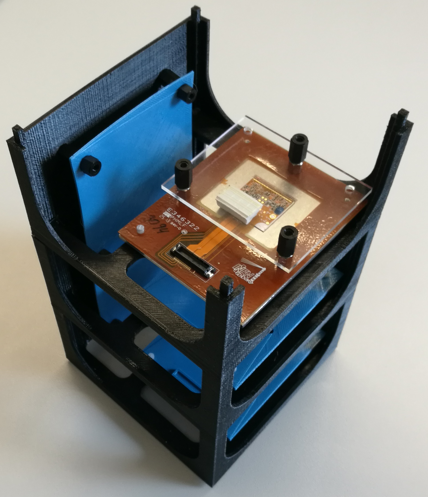
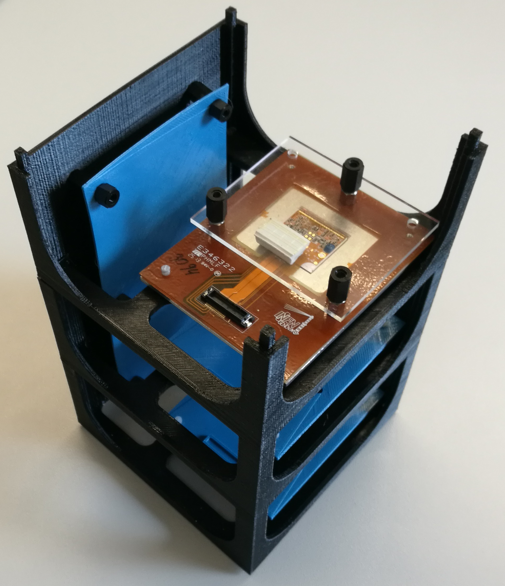

Wir sind eine Gruppe von Physikstudenten der Rheinischen Friedrich-Wilhelms-Universität Bonn, die am Studentenwettbewerb "Überflieger" des Deutschen Zentrums für Luft- und Raumfahrt (DLR) teilnehmen. Die Gewinner dieses Wettbewerbs dürfen ein von ihnen selbst entworfenes Experiment umsetzen und im Anschluss auf der Internationalen Raumstation (ISS) durchführen. Unterstützt werden sie dabei vom DLR, der Deutschen Physikalischen Gesellschaft (DPG) und weiteren Experten. Die Betreuung der Experimente an Bord der ISS übernimmt der deutsche ESA-Astronaut Alexander Gerst.
Als eine von acht Gruppen sind wir bereits in die engere Auswahl des Wettbewerbs gekommen und dürfen unser Experiment nun persönlich am 04./05.05.2017 beim DLR in Bonn vorstellen. Eine Experten-Jury entscheidet anschließend über die drei Gewinner, welche ihre Projekte dann realisieren dürfen. Wir gehen mit unserem Experiment LEOPaRD ins Rennen.
Der Name LEOPaRD steht für Low Earth Orbit Particle and Radiation Detector. Unser Ziel ist es, die Strahlungsintensität an Bord der ISS als Funktion ihrer Position über der Erde zu klassifizieren. Zum Einen möchten wir dabei das Strahlungsumfeld der Erde auf mögliche Intensitätsschwankungen und potentielle Ursachen hierfür untersuchen. Andererseits ergibt sich vielleicht auch eine interessante Abhängigkeit der Strahlungsintensität von der Jahreszeit, was zumindest aufgrund der unterschiedlichen Position der Erde relativ zur Sonne zu erwarten ist. Schließlich ist es auch für Astronauten und die an Bord befindliche Technik von hoher Bedeutung, die Strahlenbelastung genau zu kennen, um sie vor einer zu hohen Strahlenexposition schützen zu können. Die Frage, wie hoch diese Belastung tatsächlich ist, wird unser Experiment beantworten können.
Die kosmische Strahlung, welcher die Erde kontinuierlich ausgesetzt ist, besteht primär aus geladenen Teilchen wie bspw. einzelnen Protonen, Elektronen aber auch schwereren vollständig ionisierten Atomen. Die Teilchen erreichen dabei Energien, die auf der Erde in Beschleunigern erzielbare Größenordnungen bei Weitem übersteigen. Im Schutz des erdeigenen Magnetfeldes ist die Strahlung für den Menschen auf der Erdoberfläche jedoch ungefährlich. Ganz anders sieht dies hingegen in einigen hundert Kilometern Höhe aus. Hier prasseln die hochenergetischen Teilchen ungebremst auf sämtliche Objekte am Himmel, weshalb dieser Ort besonders interessant für Experimente der Teilchenphysik ist. So auch für unser Vorhaben, denn im Orbit der ISS bei ca. 400 km Höhe lässt sich das Strahlungsumfeld der Erde weitestgehend ungestört untersuchen. Abschirmende Effekte durch die Atmosphäre und das Magnetfeld der Erde treten in dieser Höhe zwar immer noch auf, jedoch ist ihre Wirkung geringer. Deshalb lässt sich die Intensität der kosmischen Strahlung hier sehr gut vermessen.
Für den Nachweis der Strahlung benutzen wir ein Teilchendetektor-Teleskop, welches aus mehreren übereinander angeordneten Halbleiterdetektormodulen besteht. Durch die Anordnung der Detektoren in mehreren Lagen, lässt sich die Flugbahn der Teilchen rekonstruieren und somit die Richtung bestimmen, aus welcher sie gekommen sind. Zusammen mit einem stabilen Grundgerüst und der Auslese-Elektronik, lassen sich so die einfallenden Teilchen als Funktion ihrer Herkunftsrichtung und hinsichtlich ihrer Intensität vermessen. Kombiniert man die in dem Detektor gesammelten Daten mit Informationen über den Ort und die Orientierung der ISS, so kann ein Intensitätsprofil für den Orbit der Internationalen Raumstation erstellt werden. Die Detektormodule stammen aus dem Silizium Labor (SiLab) der Universität Bonn, welches die Module für den Pixeldetektor des ATLAS-Experiments am CERN in Genf entwickelt und produziert. Das SiLab stellt uns außerdem freundlicherweise die nötige Infrastruktur zur Verfügung, um den Detektor auf seine korrekte Funktionsweise zu testen.
Die ISS bietet die Möglichkeit, mit dem Experiment während der Durchführung über eine Internetverbindung zu kommunizieren. Wir planen, die Datennahme des Detektors so lange wie möglich laufen zu lassen. Die gesammelten Daten werden wir dann auf dieser Website zur Verfügung stellen. Außerdem wird es eine stetig aktualisierte Karte der Erde geben, welche die gemessenen Intensitäten als Funktion ihrer Position veranschaulicht.
Neben einigen Mitarbeitern des SiLabs Bonn, welche wir in unserem Projekt direkt an unserer Seite haben, können wir uns auch auf das Fachwissen aus dem Argelander-Institut für Astronomie (AIfA) der Universität Bonn verlassen. Daher sind wir zuversichtlich, dass der Durchführung unseres Projektes zusammen mit Unterstützung der fachkundigen Kompetenz aus Detektor- und Astrophysik nichts im Wege steht.
Wir freuen uns auf den Auswahl Workshop beim DLR!
Weitere Informationen zum Überflieger Wettbewerb hier.

 
